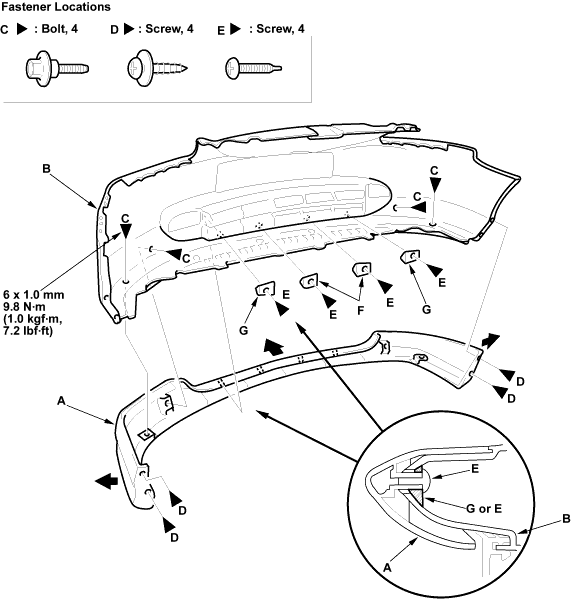

Bumpers
Front Bumper Under Spoiler Replacement
20-6
Remove the front bumper, refer to the 2001 Civic Shop Manual Supplement, P/N 62S5A21 (see page
20-8
).
Remove the front bumper under spoiler (A). Take care not to scratch the front bumper (B).
Remove the bolts (C), screws (D) and self-tapping ET screws (E).
Remove the spacers A (F) and spacers B (G) from each side.
On both wheel arch portions, pull the spoiler away.
Pull the spoiler forward, then remove it.

Install the spoiler in the reverse order of removal and make sure the spacers are installed properly.
Reinstall the front bumper.
a
a
a